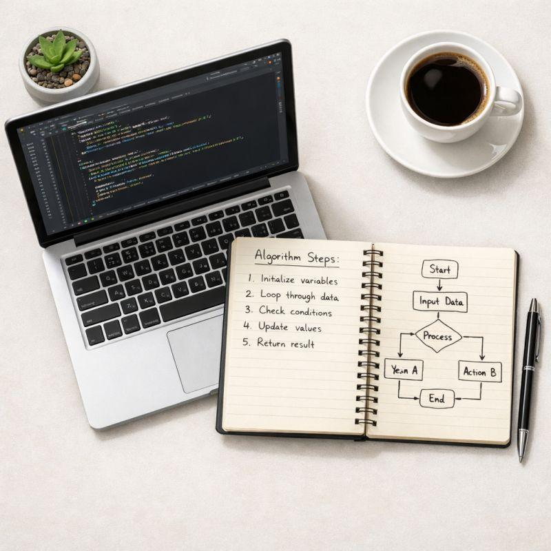

Algorithmique
Algorithmes, pseudo-code, logique, tableaux, boucles et résolution de problèmes.
Une plateforme universitaire dédiée aux étudiants en Licence 1. Retrouvez tous les cours, TD, corrigés, annales, logiciels indispensables et ressources nécessaires pour réussir votre parcours en informatique.
Explorez les principales matières de la Licence 1 Informatique grâce à des cours, TD, exercices corrigés et ressources pédagogiques.
Algorithmes, pseudo-code, logique, tableaux, boucles et résolution de problèmes.
Variables, fonctions, pointeurs, tableaux, structures et fichiers.
HTML, CSS, JavaScript et création d'interfaces modernes.
SQL, Merise, modélisation, requêtes et gestion des données.
Modèle OSI, TCP/IP, adressage IP et configuration réseau.
Architecture des ordinateurs, mémoire, processeur et systèmes d'exploitation.
Word, Excel, PowerPoint et outils indispensables à l'université.
Visual Studio Code, Code::Blocks, Git, XAMPP, MySQL Workbench et bien d'autres.
Les derniers documents ajoutés dans la bibliothèque.

📖 15 min de lecture
Comprendre les bases de la logique algorithmique et apprendre à résoudre efficacement des problèmes.
📖 22 min de lecture
Découvrez les mécanismes de pagination, segmentation et mémoire virtuelle.
📖 30 min de lecture
Projection, sélection, jointure et fondements des requêtes SQL.
Vous possédez des cours, TD, corrigés, examens, fiches de révision ou projets réalisés en Licence 1 ? Déposez-les afin d'aider les prochaines promotions.
Déposer un documentTous les outils nécessaires pour réussir la Licence 1.
Éditeur moderne pour HTML, CSS, JavaScript et de nombreux langages.
IDE conseillé pour apprendre le langage C.
Gestionnaire de versions indispensable en informatique.
Administration et création de bases de données SQL.
Cours disponibles
Travaux dirigés
Gratuit
Étudiants solidaires